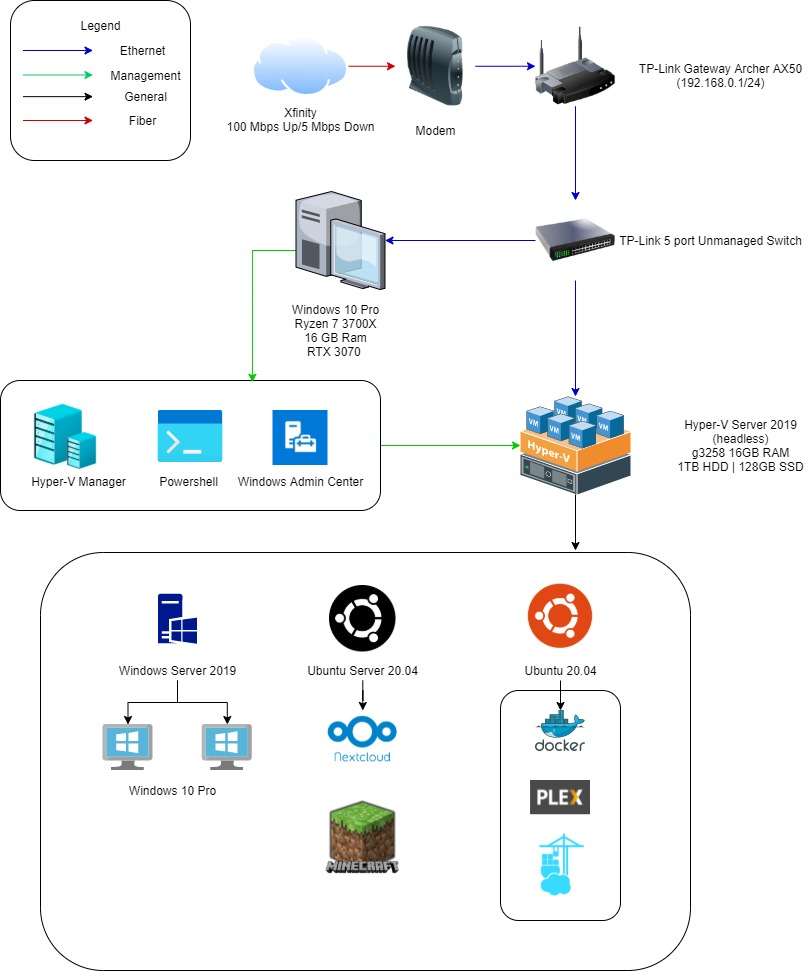

Homelab

This is a rough look at my current homelab setup.
I receive internet through my ISP via fiber which goes to my ISP's modem. From there it goes to my gateway and to my unmanaged switch.
Connected to the switch are my home server and gaming rig. The rig is a Windows 10 Pro machine with a Ryzen 7 3700x, 16gb RAM, and a RTX 3070. The home server is a Cooler Master chassis and houses a Pentium G3258, 16gb RAM, 128gb SSD and 1tb HDD. This home server is the first pc I've ever built and used to be my main rig. She's a little old and I start to notice its age last year.
I'm running Hyper-V Server 2019, the free trial headless version. I manage it through my gaming rig using a combination of Powershell sessions, the Hyper-V Manager, and Windows Admin Center, all very effective tools. I user Powershell when I've got the time and want to learn how to do my next task through the terminal, and WAC when I just need to make a quick filesystem change.
I'm currently running a few VMs, and Ubuntu server vm for all my media services, Ubuntu GUI vm for NextCloud, and a Windows Server 2019 VM set up as a domain controller with two Windows 10 VMs joined to it.
Changes I'd like to make: I'm currently in the process of trying to combine all my services onto one Docker stack. I'd like to add the ability to self host a my personal website, but the first step is to secure everything, so I'm working on setting up SSL certs using Traefik 2 and LetsEncrypt. My current barriers are less than optimal understanding of my current setup since I followed a tutorial initially, so I'll need to put some work into creating a test environment replicating my current setup in case I mess something up.
Some hardware upgrades are due in the future. Currently I'm working with the equipment that I already got right now. I plan to upgrade my pc with some more ram sticks to be able to spin up more virtualizations. My current switch is working perfectly but I feel like it would be great experience to work with an enterprise switch. This will help me to get used to enterprise hardware and software. Also, I plan to add more storage. I'll need a raid controller so I can set my storage up properly, and I'll need to figure out a way to store my existing media for a small amount of time while I configure everything.